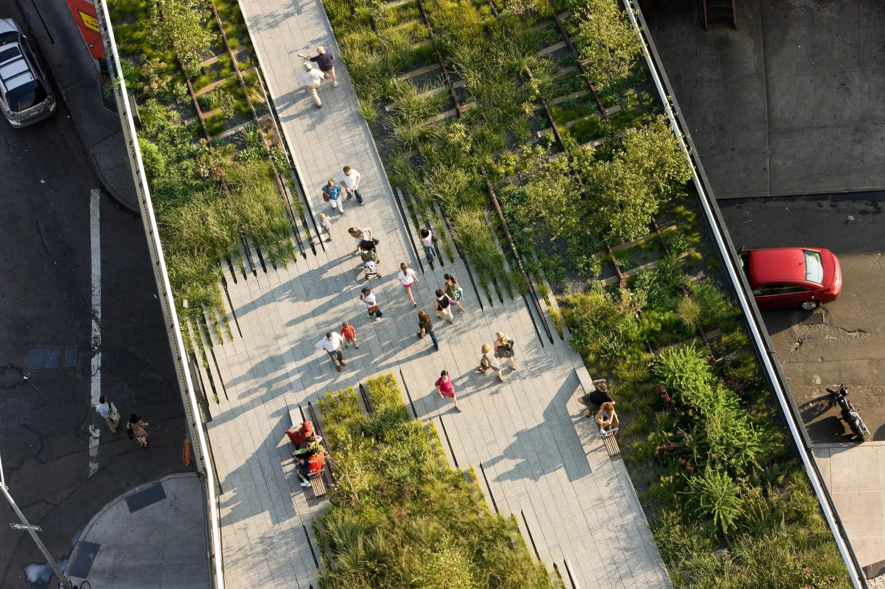

THE HIGH LINE

Designed in collaboration with James Corner Field Operations and Piet Oudolf, the High Line is a 1.5–mile long public park built on an abandoned elevated railroad stretching from the Meatpacking District to the Hudson Rail Yards in Manhattan.
Found
Inspired by the melancholic, unruly beauty of this postindustrial ruin, where nature has reclaimed a once vital piece of urban infrastructure, the new park interprets its inheritance. It translates the biodiversity that took root after it fell into ruin in a string of site–specific urban micro-climates along the stretch of railway that include sunny, shady, wet, dry, windy, and sheltered spaces.
Design
Through a strategy of agri–tecture—part agriculture, part architecture—the High Line surface is digitized into discrete units of paving and planting which are assembled along the 1.5 miles into a variety of gradients from 100% paving to 100% soft, richly vegetated biotopes. The paving system consists of individual pre–cast concrete planks with open joints to encourage emergent growth like wild grass through cracks in the sidewalk. The long paving units have tapered ends that comb into planting beds creating a textured, “pathless” landscape where the public can meander in unscripted ways. The design addresses a multitude of civic issues: reclamation of unclaimed public space, adaptive reuse of outmoded infrastructure, and preservation as a strategy for sustainability. The park accommodates the wild, the cultivated, the intimate, and the social.
Post Occupancy
The High Line opened to the public in sections, starting in 2009, with phased openings in 2011, 2014, and 2019. From New York City’s investment of $115 million USD, the High Line has stimulated over $6 billion USD in urban development and created 12,000 new jobs. Initially imagined as a singular, idiosyncratic, local solution, last year the High Line drew 8 million visitors and has “gone viral” as a global development model: over one hundred cities worldwide have been inspired to transform their obsolete urban infrastructure into public parks.
Project information
- SIZE (GSF)
- 310,000
- COMMISSION
- 2000
- PHASE I COMPLETE
- 2009
- PHASE II COMPLETE
- 2011
- PHASE III COMPLETE
- 2014
- SPUR COMPLETE
- 2019
Credits
- PARTNERS
- Ricardo Scofidio
Elizabeth Diller
Charles Renfro - PROJECT DIRECTOR
- Anthony Saby
Matthew Johnson - PROJECT LEADERS
- Miles Nelligan
Ayat Fadaifard - DESIGNERS
- Brian Tabolt
Alex Knezo
Tobias Hegemann
Ben Smoot
Trevor Lamphier
Chiara Baccarini
Robert Condon
Hayley Eber
Gaspar Libedinsky
Jeremy Linzee
David Newton
Daniel Sakai
Don Shillingburg
Flavio Stigliano
Dustin Tobias
Andrew Cornelis
External credits
- JAMES CORNER FIELD OPERATIONS
- Landscape Architecture, Urban Design
- PIET OUDOLF
- Planting Design
- BUROHAPPOLD
- Structural and MEP Engineering
- ROBERT SILMAN ASSOCIATES
- Structural Engineering and Historic Preservation
- L’OBSERVATOIRE INTERNATIONAL
- Lighting Design
- PENTAGRAM
- Signage